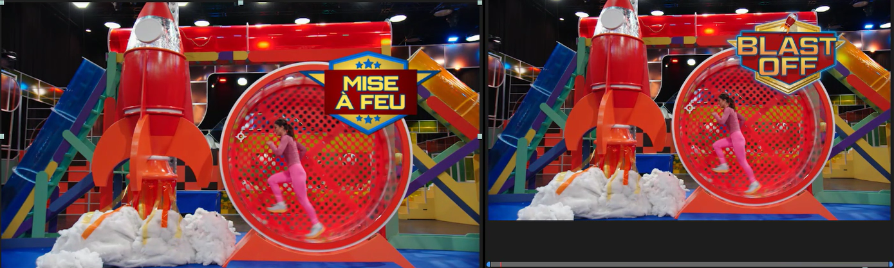
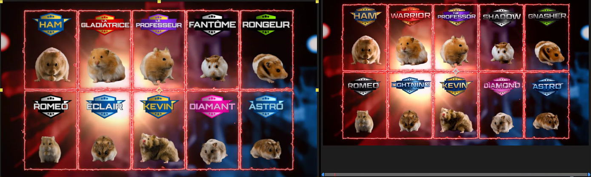
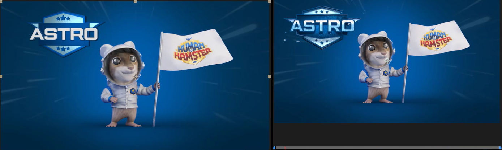
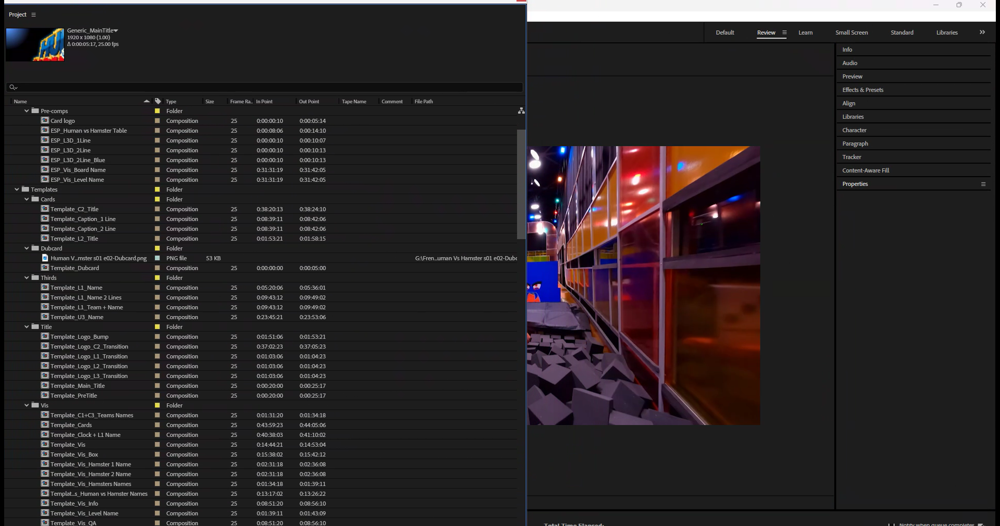

Warner Bros. Discovery · Localisation · [YEAR]
Human vs Hamster —
GFX Rebuild & Toolkit
Overview
Localising a series is straightforward when you have the project files. We didn't have any.
To deliver the French version of Human vs Hamster, I rebuilt the show's entire graphics package — 2D, 3D, and the logo artwork itself — from scratch, using only the English broadcast masters as reference. No project files, no original assets, no typefaces supplied. Every element was reconstructed by eye, then structured as an automation-ready Essential Properties toolkit so that localising each new episode became a versioning job, not a rebuild.
The rebuild in frames
The test of a from-scratch reconstruction is simple: cut it against the original and see if anyone can tell. Every graphic below was rebuilt with no project files — matching typography, colour, lighting and timing from broadcast reference alone.



Down to the logo itself
With no source artwork, even the show logo had to be rebuilt. Working from a single broadcast screengrab, I reconstructed the Human vs Hamster wordmark from scratch as clean vector in Illustrator — every letterform, bevel, outline and colour band redrawn — then localised it to the French Humain vs Hamster. That vector became the master logo used across every graphic in the package: bumps, transitions, lower thirds and boards.
A 3D version of the title was also rebuilt in Cinema 4D to match the original's dimensional logo bumps and transitions.
How the system is built
Rather than recreating graphics episode by episode, I built everything as a two-tier template toolkit: a set of master graphic rigs exposed through the Essential Graphics panel, wrapped by a library of ready-to-use template comps an editor drops straight onto the timeline.
Six exposed rigs — the L3D name-strap exists as a 1-line, 2-line and blue team variant sharing one design language. Real comp and control names from the project.

Built for batch automation
Because every editable field is a named text layer, the toolkit plugs straight into the studio's batch-automation script. A translation list is matched to the timeline by timecode, and the script generates a full set of populated graphics comps in one pass — dropping each translation into the right rig automatically. What would be hundreds of manual graphic edits per episode becomes a populate-and-proof job.
Crucially, the rigs still work entirely by hand. If the automation isn't run — or an editor wants to tweak one card — they type straight into the Essential Graphics panel. The automation is an accelerator, never a dependency.


One timing convention, everywhere
Every animated template carries the same four-control rig — Animate In and Animate Out checkboxes plus Frames In and Frames Out sliders. An editor sets timing the same way on every graphic in the package and never touches a keyframe. The heavier rigs go further: ESP_Vis_Board Name exposes the upper text, main text, text colour and a multi-step colour-menu system — one build serving many on-screen states.

One rig, many looks — the colour system
The two richest rigs don't hard-code their colours. ESP_Vis_Board Name and ESP_Vis_Level Name run stacked colour-menu controls (Colour 1, 2, 3 — sometimes 4) feeding Fill effects, so a single build switches between the show's blue, gold, purple, pink and green states from a dropdown rather than a re-edit. One rig covers what would otherwise be a dozen separate graphics.

Not flat — lit 3D scenes
The "vis" rigs aren't 2D lower thirds. Rebuilt from reference, ESP_Vis_Board Name and ESP_Vis_Level Name are composed in 3D space — a camera, multiple ambient lights, a main canvas plane and shaped geometry — so the name boards sit and catch light like the originals. Matching that look without source files meant reconstructing the lighting and camera by eye, then wrapping the result in the same editor-safe controls as everything else.

The clever bit — a self-running clock
The challenge clock isn't keyframed. A Slider Control sets the start time, an expression advances it one second per second of playback, and a second expression formats the result as mm:ss — so an editor just sets a number and the timer runs itself, correctly, every time.
// offset on the Slider Control — advances with playback effect("Slider Control")("Slider") + Math.floor(time) // source text — formats the slider as mm:ss slider = effect("Slider Control")("Slider"); sec = slider % 60; min = Math.floor(slider / 60); function addZero(n){ return (n < 10) ? "0"+n : n; } slider > 0 ? addZero(min)+":"+addZero(sec) : "00:00"
Expressions wire the rest of the rigs together too — editable text layers feed the visible graphic via sourceText links, and fade timing is driven off the Frames In control, so the exposed inputs stay simple while the rig does the work underneath.

At scale
The same toolkit drove the full episode end to end — from main title and pre-titles through contestant lower thirds, team names, challenge name cards, the stats vis overlays, the running clock and the closing dubcard. Built once, it absorbed a whole series' worth of localised copy through the same rigs.
Why it matters
Built this way, a new episode is a populate-and-proof job rather than a rebuild — and because the rigs are locked and editor-safe, anyone on the team can run it without breaking the brand. The same architecture that made a from-scratch localisation possible is what keeps it fast and consistent at series scale.
Credit
Original package design: [original broadcaster's design team].
My role: full GFX recreation, Illustrator logo rebuild, Cinema 4D title rebuild and localisation toolkit at Warner Bros. Discovery.